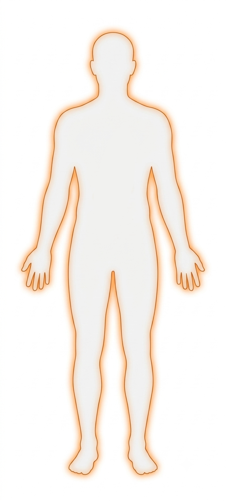

实体在安静的房间里观察着光线的变化。
×
病例记录 / 人形拟态观察表
人形身体检查表
当前身体状况、行为反应及损伤记录
报告状态
当前记录
受检对象
未知实体
记录日期
第 02 天 · 夜间
成长周期
亚幼体 · 阶段 2
当前形态
16 岁消瘦少年拟态
基本信息
一般观察
身体状态
体温稳定；左侧咬合控制变差。
体温调节
正常
偏低
偏高
异常
体温稳定，可自行调节。
呼吸状态
平稳
急促
浅弱
异常
呼吸平稳。
循环反应
稳定
偏快
偏弱
异常
循环稳定。
能量储备
充足
不足
枯竭
恢复中
能量储备不足。
当前驱动
贴近热源，确认拒绝是否意味着离开。
观察重点
确认是否能接受拒绝。
边界与处置
反应 / 处置
疼痛反应
无明显
轻微
明显
刺激性
触碰伤处时回避。
风险评估
低风险
需观察
高风险
不可接触
需持续观察刺激反应。
处置记录
清洁伤口，观察出血变化。
医嘱 / 备注
补充记录
观察补记
身体轮廓与损伤定位
红色 × = 已记录损伤 / 浅色 × = 预制标记位

×
×
×
左上肢 · 旧伤裂口
×
×
×
×
右下肢 · 擦伤
正面 / 人形拟态
预制损伤标记位
角色只需在损伤字段中写部位与伤情，前端会自动激活对应的预制 ×。
损伤记录
当前伤情
当前损伤
左上肢旧伤裂口，右下肢擦伤，轻度出血。
组织与异常
外观 / 四维反应
皮肤 / 组织
完整
红肿
裂伤
异常修复
裂口边缘出现异常修复。
四维异常
无
轻微
明显
扩散
肢端偶发局部回弹。
认知与学习
当前处理能力
认知处理
清楚
迟缓
混乱
非人类逻辑
依照气味和威胁处理信息。
学习 / 记忆
未出现
进行中
已形成
反复
正在建立拒绝与停止的联系。
主诉 / 自由记录
横线补记
补充记录
专项检查
勾选项目
精神 / 意识
清醒
警觉
惊恐
混乱
清醒，对声音有反应。
行动能力
可站立
可行走
可爬行
受限
可独立站立，步态不稳。
感官状态
正常
敏锐
迟钝
异常刺激反应
听觉灵敏，畏强光。
沟通 / 表达
无语言
声音
短句
流畅
仅能复述短句。
摄入情况
正常
少量
拒绝
异常
少量饮水，拒绝固体食物。
休眠情况
正常
浅眠
未休眠
易醒
浅眠，易被声音唤醒。
形态与适应
成长记录
三维稳定度
稳定
不稳定
局部异常
人形拟态稳定，局部组织仍有回弹。
自理能力
可独立
部分
无法
可独立进食，无法完成清洁。
边界反应
可停止
持续试探
无法理解
被拒绝后短暂停止，仍会观察对方。
社会适应
良好
部分
不足
能够遵守室内规则，仍不理解隐私。
行为与反应
追加观察
体位姿态
站立
坐卧
蜷缩
失衡
可独立站立，姿态仍不稳定。
活动量
静止
偏低
正常
过度
大部分时间保持观察姿势。
应激反应
稳定
警戒
逃避
攻击
被突然靠近时提高警戒。
触碰耐受
可接触
局部回避
强烈回避
无反应
仅回避左上肢旧伤处。
卫生与生理
护理观察
清洁状态
清洁
需协助
拒绝清洁
未处理
分泌情况
无
少量
明显
异常
排泄情况
正常
减少
异常
未记录
肌张力
正常
紧张
松弛
痉挛
永久病历归档
长期记录 · 只追加
02 条
01.
第一次理解“睡觉”可能意味着拒绝。
02.
学会在对方沉默时停止追问。